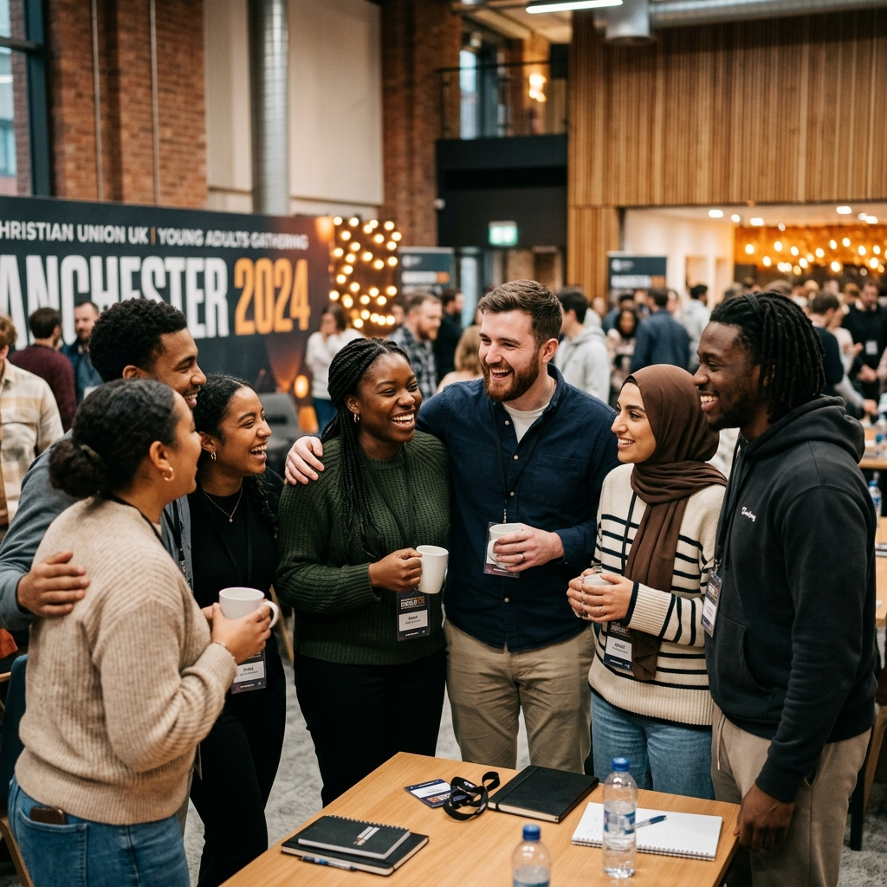
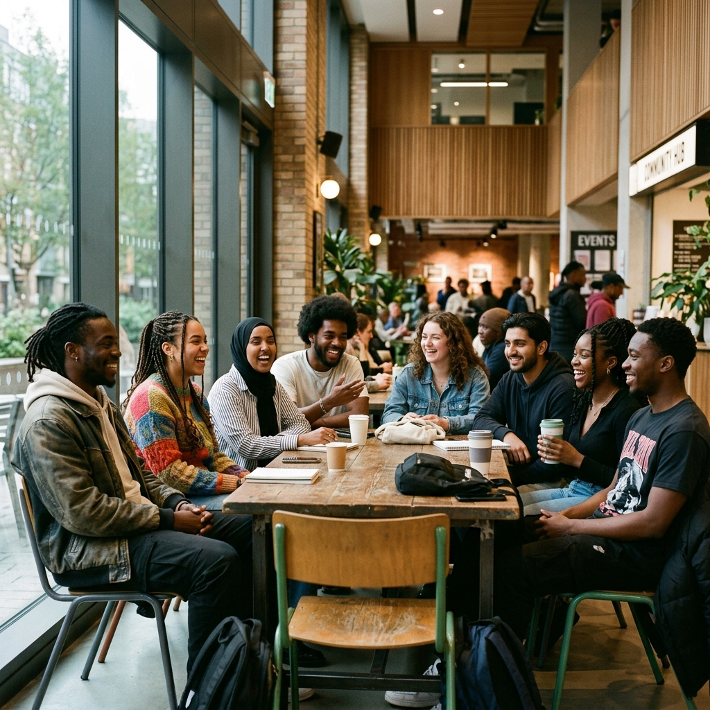
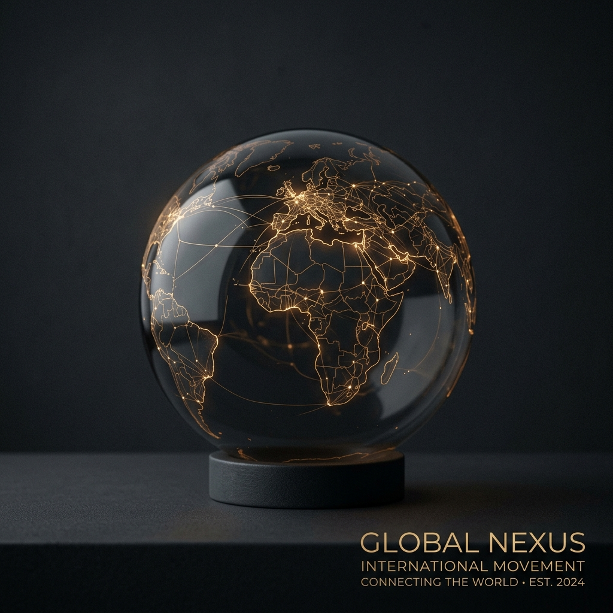

One Movement. One Purpose. One Lord.
MASS Movement UK is a national interdenominational Christian movement — gathered in the UK, carrying the name of Jesus to every generation and every nation.
MASS Movement UK is a national interdenominational Christian movement with one vision: to carry the name of Jesus to every generation and every nation. We gather believers from across the UK — united not by denomination, but by one name.
LATTER RAIN is MASS UK's annual gathering — a Spirit-filled, cross-denominational day of worship, prayer, and the Word. Every generation. Every background. One purpose. Come expectant. God is about to pour out.
Uncompromising biblical roots coupled with a cross-generational mandate.
One name. One mission. Everything MASS does flows from one conviction — Jesus is the hope of every generation and every nation.
We are interdenominational by conviction. We believe the Church is stronger when it stands together, united around one name.
Young people are not the Church of tomorrow — they are the Church of today. We invest in them, trust them, and make space for them to lead.
From the UK to the world — we carry the Gospel with urgency, faith, and love. The mission has no borders.
Practical initiatives carrying faith into every layer of society across the United Kingdom.
Active evangelism and gospel outreach across cities and communities in the UK.
Discipleship training, Scripture study, and spiritual grounding for believers.
Annual national gatherings bringing together believers from every region.
Youth ministry, mentoring, and leadership development for emerging voices.
Cross-denominational prayer hubs and passionate worship nights.
Practical mercy initiatives and compassionate care within local communities.
Online media ministry, digital resources, and global content distribution.

Whether you're from a Pentecostal church, an Anglican parish, a Baptist fellowship, or anywhere in between — if you love Jesus, there is a place for you in MASS. We are not another institution. We are a family, gathered around one name, sent to every nation.
Our community spans the length of the UK — and we'd love for you to be part of what God is doing.
MASS UK is part of the wider MASS Movement — an international family of Christians from many denominations, reaching nations across the world. We are an independently governed UK movement, but we carry the same heart, the same values, and the same God-given mandate: Jesus, to every generation, to every nation.

MASS UK is a movement powered by faith, fuelled by community, and sustained by generosity. The mission — Jesus to every generation, to every nation — does not happen without people who believe in it enough to give, to pray, and to get involved.